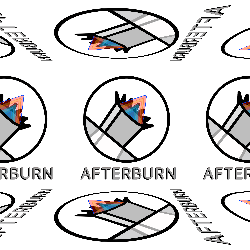

About Us
At Afterburn Laboratories, we specialize in innovative technology solutions that defy expectations. Founded in 1948, we've been bringing you teleportation testing ever since!
Our Services
- ~Advanced Research and Development~
- ~A.I development and secuity solutions~
- ~Portal teleportation testing~